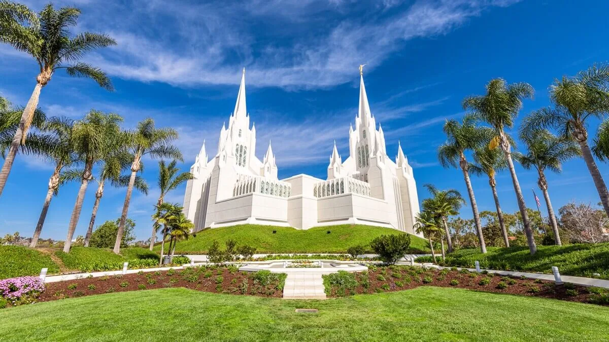

Key Features & Purposes Temples
-
Sacred Ordinances
LDS temples are the only places where specific ordinances, like the endowment and eternal marriage, can be performed.
-
Covenants with God
Members make solemn covenants with God within the temple, signifying a commitment to follow God's teachings and commandments.
-
Baptisms for the Dead
Temples are where members perform ordinances, such as baptism, on behalf of deceased individuals who did not have the opportunity to receive them in this life.
-
Family Unity
Temples are a place where families can be sealed together for eternity through the ordinance of eternal marriage.
-
Spiritual Growth
Temples provide opportunities for spiritual reflection, learning about God's plan of happiness, and feeling the Spirit of God.
-
House of the Lord
The temples are considered "houses of the Lord," where members can draw closer to God and His Son, Jesus Christ.
Facts about Calidornia
-
Most Populous State
California has a significant population, with over one in eight Americans residing within its borders
-
"The Golden State"
This nickname reflects the state's rich history, particularly during the Gold Rush, and is further emphasized by the state flower, the California poppy, which is a golden color.
-
Giant Sequoias
Sequoia National Park in California is home to the world's largest trees, the giant sequoias, which are known for their massive size and long lifespans.
-
Diverse Landscapes
California's geography is incredibly diverse, ranging from the rugged coastline and beaches to the desert landscapes of Death Valley, the Sierra Nevada mountain range, and vast agricultural areas.
-
Frequent Earthquakes
While many earthquakes are minor, California experiences a significant number each year, reflecting its location along the Pacific Ring of Fire.